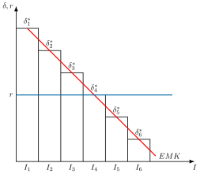
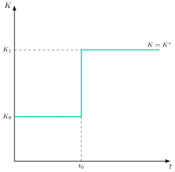
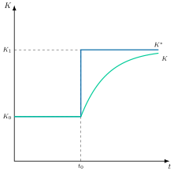
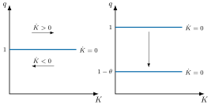
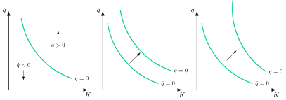
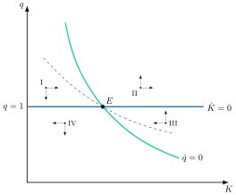
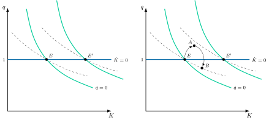
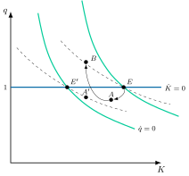
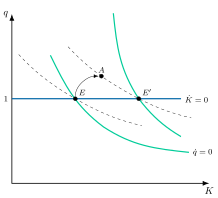
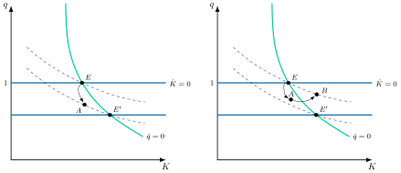

Apuntes para la oposición al Cuerpo de Diplomados Comerciales del Estado
4 Teorías de la inversión en bienes de equipo. Incertidumbre e irreversibilidad de la inversión. Implicaciones de política económica.
Tema pendiente de revisión. Este tema está publicado pero aún no lo he revisado a fondo: puede contener erratas o partes por pulir.
4.1 Introducción  1'
1'
La inversión es el motor del crecimiento económico a largo plazo. Es el proceso mediante el cual las unidades de producción ajustan su stock de capital disponible al stock de capital deseado, actuando como una variable flujo que refleja los cambios en una variable stock. Este flujo productivo, no consumido, es el nexo entre el sector monetario y el real, y el que pasa a engrosar la riqueza nacional. En España, la formación bruta de capital fijo representa en torno al 20% del PIB, algo por debajo del 21% de la UE (Eurostat 2026), siendo además su componente más volátil.
Comprender qué factores impulsan o frenan esta inversión es clave para los economistas y los responsables de la política económica. Se trata de analizar por qué, en ciertos momentos, las empresas adquieren maquinaria, construyen infraestructuras y desarrollan nuevas tecnologías, mientras que en otros prefieren la cautela. El estudio de la demanda de inversión busca identificar las variables que explican estas decisiones y su impacto fundamental en el empleo, la productividad y el dinamismo de la economía.
Por consiguiente, el objetivo de este tema será estudiar las teorías de la demanda de inversión a través del siguiente esquema:
Teoría de Keynes de la demanda de inversión.
Desarrollos keynesianos de la demanda de inversión.
Teorías neoclásicas.
Financiación, incertidumbre e irreversibilidad de la inversión.
4.2 Teoría de Keynes de la demanda de inversión 2'30"
John Maynard Keynes en su Teoría General aceptará algunos aspectos de la teoría neoclásica (por ejemplo, la demanda de trabajo), pero criticará otros muchos como la demanda de inversión.
La innovación intelectual de Keynes fue considerar que la inversión era la causa primaria de la insuficiencia de demanda, por ende, la infrautilización de recursos y fluctuaciones cíclicas, y que las decisiones de inversión eran independientes de la cantidad disponible de ahorro (no se cumple la Ley de Say).
En este sentido, la función de inversión keynesiana le permite justificar la insuficiencia de demanda, donde ante ciertos desequilibrios la economía puede operar durante largos periodos de tiempo alejada del equilibrio de pleno empleo, en el que existiría desempleo involuntario.
Keynes (1936, cap. 11) defendía una función de inversión agregada decreciente en el tipo de interés, que en su versión lineal habitual tiene la siguiente forma1: \[I=I_{0}-b\cdot r \tag{4.1}\] donde:
El componente exógeno, \(I_{0}\), es el componente exógeno de la inversión, que recoge las expectativas exógenas de los empresarios sobre los rendimientos futuros y los tipos de interés (es decir, sobre las variables que afectan a la eficiencia marginal del capital que se define más adelante) y sus “animal spirits”, el impulso espontáneo a actuar en lugar de esperar (Baddeley 2003, 37). Se trata de un componente muy volátil.
El componente endógeno, \(-b\cdot r\), es la parte de la inversión que depende del tipo de interés real. Según Keynes, actúa por el siguiente canal: los empresarios ordenan los diferentes proyectos de inversión existentes de acuerdo con lo que Keynes llamó “eficiencia marginal del capital” (o tasa interna de retorno, TIR), \(\delta\)2.
Para Keynes, la eficiencia marginal del capital será la tasa de descuento que hace que el valor presente de los rendimientos esperados de la inversión en un bien de capital se iguale a su coste. Es decir, la eficiencia marginal del capital es la tasa de rentabilidad del proyecto de inversión (la TIR)3 \[C_{0}=\sum\limits_{t=1}^{N}\dfrac{\text{Beneficios}_{t}}{\left(1+\delta\right)^{t}} \tag{4.2}\]
Así, en un plano de tipo de interés, tasa de rentabilidad e inversión como el de la Figura 4.1, la unión de las distintas eficiencias marginales del capital (ordenadas de mayor a menor) de todos los proyectos dará lugar a la “curva de eficiencia marginal del capital”4.

Así, los empresarios elegirán aquellos proyectos para los que la tasa de rendimiento sea superior al tipo de interés real (que es exógeno y constante). Gráficamente, invertirán hasta que la curva de eficiencia marginal del capital corte a la del tipo de interés real, determinándose de ese modo la función de demanda de capital productivo.
Keynes no negó el papel del tipo de interés (Baddeley 2003, 34), pero consideró que la eficiencia marginal del capital depende de expectativas precarias y de los animal spirits, de modo que sus desplazamientos dominan sobre los movimientos a lo largo de la curva. Por eso la inversión es muy volátil. La lectura IS-LM posterior lo traducirá en una curva de eficiencia marginal del capital muy vertical.
Implicaciones de política económica
En el contexto keynesiano, la política monetaria apenas puede estimular la inversión privada, que viene determinada principalmente por los animal spirits, es decir, por expectativas volátiles. Keynes confiaba más en la inversión pública y en las políticas que actúan directamente sobre la eficiencia marginal del capital.5 Por lo tanto, la inversión keynesiana va a ser muy inestable.
Sin embargo, al depender la inversión de las expectativas, se hace necesaria la intervención estabilizadora del sector público a través de políticas expansivas de demanda6, frente a la habitual desconfianza neoclásica en dicha intervención. Esto es posible gracias a la efectividad de la política fiscal keynesiana sobre la renta.
Valoración
Se trata de la primera teoría sobre inversión a la vez que es sencilla e intuitiva.
La curva de eficiencia marginal del capital, tal como la recoge la síntesis neoclásica, determina un stock de capital deseado más que un flujo de inversión. Es, por tanto, una teoría estática que no explica el ajuste del stock de capital.
Así, la teoría nos da en cada periodo de tiempo el ajuste que debería hacer el empresario para llegar al stock de capital deseado. Esto implica que la inversión, que es la variación del stock de capital, sería infinita cada vez que cambia el stock deseado, tal y como se observa en la Figura 4.2, lo cual no es realista:Figura 4.2: Ajuste del stock de capital keynesiano 
La inversión depende en gran medida de los animal spirits, que no son observables y son exógenos.
La pendiente de la curva de EMI (a nivel agregado) puede ser positiva (recursos ociosos):
Al aumentar la inversión, aumenta la demanda con lo que aumenta la renta y por ende los retornos esperados de la inversión… \(\uparrow Inv\rightarrow\uparrow DA\rightarrow\uparrow Y\rightarrow\uparrow\text{Retorno inversiones }\rightarrow\uparrow Inv\ldots\)
Además, introduce la EMI pero no la modeliza (solucionado por la \(q\) de Tobin)
Otras teorías
Tanto Keynes como Fisher (1930) explicaron la determinación de la inversión a través de la interacción entre la \(EMK\) y el tipo de interés. No obstante, existe una diferencia fundamental entre ambas teorías, que está en las expectativas: Fisher describe un mundo de riesgo medible, en el que pueden calcularse las probabilidades de los rendimientos futuros, mientras que Keynes parte de una incertidumbre profunda, en la que rara vez pueden medirse (Baddeley 2003, 24).
Por otra parte, Fisher no se centró en el stock de bienes de capital, sino en los flujos de inversión, y anticipó así las versiones de la \(q\) con costes de ajuste. El ajuste hacia un stock óptimo de capital es propio, en cambio, del acelerador y del modelo de Jorgenson (Baddeley 2003, 25).
Los desarrollos posteriores formalizarán las proposiciones de Fisher (Jorgenson 1963). Por su parte, el trabajo de Keynes sobre la probabilidad y la incertidumbre anticipó enfoques probabilísticos posteriores como el de Markowitz (1952) (Eklund 2013, 3).
4.3 Desarrollos keynesianos de la demanda de inversión 3'
La teoría de la \(q\) de Tobin
La teoría de la \(q\) de Tobin (Tobin 1969) es un pilar fundamental en la Macroeconomía que vincula el mercado de valores con las decisiones de inversión real de las empresas. Su principal aportación es la de fundamentar y mejorar la teoría de Keynes sobre la demanda de inversión, al proporcionar un mecanismo claro y cuantificable para los “animal spirits” de los empresarios.
Mientras que Keynes enfatizaba la importancia de las expectativas volátiles, Tobin las integra en un modelo al reflejar el optimismo o pesimismo en el precio de las acciones.
La teoría se centra en el parámetro \(q\), una ratio que compara el valor de mercado de una empresa, \(VME\) con el coste de adquirir los mismos activos que ya posee, es decir, el coste de reposición del capital, \(CRK\).7 \[q=\dfrac{VME}{CRK} \tag{4.3}\]
De esta forma, el valor de mercado de la empresa refleja lo que los inversores están dispuestos a pagar por sus activos instalados, influenciados por sus expectativas de beneficios futuros. Por su parte, el coste de reposición del capital es el precio actual de los nuevos bienes de capital (maquinaria, edificios, etc.) en el mercado.
La relación con la inversión
Si \(q>1\): El valor de los activos instalados es superior al coste de su reposición. Esto indica que el mercado ve a la empresa como un vehículo rentable para el capital. La empresa tiene un incentivo para invertir en nuevos activos, ya que cada euro gastado se traduce en un aumento de valor de más de un euro en el mercado bursátil.
Si \(q<1\): El valor del capital existente es inferior a su coste de reposición. No hay incentivo para invertir en nuevos activos. En este caso, puede ser más rentable para la empresa vender sus activos o abstenerse de reemplazar los que se deprecian.
Si \(q=1\): sin costes de ajuste, la \(q\) de Tobin sería siempre igual a 1, y con costes de ajuste tiende a 1 en el largo plazo. Cuando el valor de mercado del capital coincide con su coste de reposición, la inversión neta tiende a ser cero. La empresa solo invertiría para reemplazar el capital que se deprecia, manteniendo su stock de capital constante.
Implicaciones de política económica
La \(q\) de Tobin depende fundamentalmente de los beneficios esperados del capital. Si el rendimiento esperado de un activo es superior a su coste, el valor de las acciones de la empresa subirá, incrementando la \(q\). De este modo, la teoría establece un mecanismo de transmisión de la política económica: los cambios en la confianza de los inversores o en las expectativas de beneficios, reflejados en las fluctuaciones de la bolsa de valores, afectan directamente las decisiones de inversión y, por tanto, a la demanda agregada y al empleo.
Adicionalmente, la importancia de la teoría de la \(q\) de Tobin en el desarrollo del análisis de la inversión es tal, que según se verá a lo largo de la exposición, puede asimilarse al modelo neoclásico con costes de ajuste.
Teorías del acelerador
El acelerador es el efecto de las variaciones de la producción sobre la demanda de inversión (Romer 2012, 422).8 Para obtener una verdadera teoría de la inversión, los seguidores de Keynes (Samuelson 1939; Hicks 1950)9 realizaron supuestos adicionales sobre el ritmo de ajuste al stock de capital óptimo. Estos autores desarrollaron funciones de inversión ad hoc, apriorísticas, sin ningún tipo de sustrato teórico (micro), pero sí sustrato empírico10.
Estas teorías consideran que la inversión neta depende de los cambios en la demanda agregada: si la demanda agregada aumenta, las empresas pueden o bien aumentar sus precios o bien aumentar su oferta, y en un contexto keynesiano (es decir, precios rígidos) elegirán esta última opción, para lo que necesitarán invertir.
Siguen la línea de que la inversión depende de las expectativas y es poco sensible al tipo de interés. No obstante, ahora depende de las expectativas sobre la variación en la demanda agregada11.
Se distinguen dos tipos de teorías del acelerador (simple y flexible) en función del proceso de ajuste entre el stock inicial y el deseado.
Teoría del acelerador simple
Los productores desean mantener una ratio capital-producto (que se denota por \(v\)) constante deseado12, de manera que el stock óptimo de capital será \[K^{*}_{t}=v\cdot Y^{e}_{t} \tag{4.4}\]
Como los productores quieren mantener la ratio capital-producto constante, la inversión neta de cada período es igual al cambio en el stock óptimo de capital, que, a su vez, depende del cambio esperado en la producción. Es decir: \[I=\Delta K^{*}_{t+1}=v\cdot\Delta Y^{e}_{t+1} \tag{4.5}\] Intuitivamente, si la renta aumenta, hará falta más equipo productivo para poder satisfacer la demanda, por lo que aumentos de la renta conducirán a aumentos de la inversión.
Además, se supone que los inversores forman sus expectativas sobre el nivel de producción futuro, \(Y^{e}_{t+1}\), atendiendo al nivel de producción presente. Por tanto, con expectativas estáticas, el cambio esperado de producción coincide con el observado, \(\Delta Y^{e}_{t+1}=\Delta Y_{t}\), de modo que: \[I=v\cdot\Delta Y^{e}_{t+1}=v\cdot\Delta Y_{t} \tag{4.6}\]
Por lo tanto, se observa que, cuanto mayor sea la ratio capital-producto, v, mayor será el efecto de cambios en la demanda agregada sobre la inversión. En otras palabras, mayor será el efecto “acelerador”.
No existe retardo hasta alcanzar el capital óptimo (\(K^{*}\)). En todo momento el capital instalado es el óptimo: \(K=K^{*}\).
Implicaciones de política económica
La política monetaria es aún menos efectiva para afectar a la inversión que para Keynes, ya que ahora la inversión no depende en absoluto del tipo de interés real, sino de la variación de la producción.
La política fiscal, a diferencia de lo que ocurría con Keynes, sí es efectiva para afectar a la inversión, ya que ahora la inversión depende de la variación de la renta, y la política fiscal puede afectar a ésta sin que se produzca un efecto crowding-out.
Por lo que el multiplicador (supermultiplicador) de impacto de la política fiscal será: \[\dfrac{\partial Y}{\partial G}=\dfrac{1}{1-c-v} \tag{4.7}\] donde \(c\) es la propensión marginal a consumir. Este multiplicador solo es positivo y finito si \(c+v<1\), y se observa que cuanto mayor sea \(v\) mayor será el efecto acelerador.13
Críticas
La principal crítica a la teoría del acelerador simple es que se basa en supuestos muy restrictivos:
Que el capital sea proporcional al producto quiere decir que se supone una función de producción de tipo Leontief (coeficientes fijos): \[Y=Min\left\{ \dfrac{K_{t}}{v},\dfrac{L_{t}}{z}\right\} \tag{4.8}\]
La demanda de inversión no depende en absoluto del tipo de interés, lo cual no apoya la evidencia empírica.
Las expectativas de los empresarios son estáticas.
No hay exceso de capacidad instalada (capital de reserva), ya que ante cualquier variación del nivel de demanda agregada, hay que invertir en la misma proporción.
La inversión no tiene retardos: cuando el stock de capital óptimo cambia, la inversión lo ajusta inmediata y completamente.
De nuevo esto es una teoría de demanda de capital y no una teoría de inversión, dado que cuando el stock de capital óptimo cambia la inversión se ajusta inmediatamente y completamente14.
Teoría del acelerador flexible
Este modelo es una variación del anterior. La principal novedad es que considera que existen una serie de retardos inherentes al proceso de inversión (costes de decisión, de financiación, de entrega, de instalación, etc.), que hacen que, ante cambios en el producto, el stock de capital no se ajuste de forma inmediata.
Los retardos se introducen en el modelo por medio del supuesto de que la inversión depende de la variación, no de la renta del período, sino de la renta de todos los períodos anteriores de acuerdo con una media ponderada, de modo que el peso de cada variación va disminuyendo conforme se aleje éste en el tiempo15: \[I=v\cdot\sum\limits_{j=0}^{\infty}\beta_{j}\cdot\Delta Y_{t-j},\quad\sum\limits_{j=0}^{\infty}\beta_{j}=1 \tag{4.9}\]
Implicaciones de política económica
La política monetaria no es nada efectiva para afectar a la inversión, como en la teoría del acelerador simple.
La política fiscal sí es efectiva para afectar a la inversión, pero algo menos que en la teoría del acelerador simple, ya que ahora la inversión se ajusta más lentamente, pues cada periodo solo se cierra una fracción \(\beta\) de la brecha, con \(\beta<1\): \[K_{t}=\beta\cdot v\cdot Y_{t}+\left(1-\beta\right)K_{t-1}\longrightarrow\dfrac{\partial Y}{\partial G}=\dfrac{1}{1-c-\beta\cdot v} \tag{4.10}\]
Valoración
Supera una de las principales críticas del acelerador simple:
La introducción de retardos hace que la inversión sea finita en cada periodo, es decir, el ajuste hacia el capital óptimo se haga lentamente como se observa en la Figura 4.3.
Por ello, nos hallamos ante una teoría de inversión.

Críticas
Mismas críticas que para la teoría del acelerador simple (con la excepción de que ahora sí se contemplan retardos).
Supone que se podría adquirir todo el capital deseado al tipo de interés existente (oferta totalmente elástica respecto al tipo de interés).
Esta teoría tiene bastante éxito desde el punto de vista de la evidencia empírica, pero ello no implica que la teoría sea correcta.
- En efecto, dado que el capital es un input clave de la función de producción, no es extraño que exista una correlación entre la acumulación de capital (es decir, la inversión) y la variación de la producción. El asunto es que esta correlación no implica causalidad. Podríamos decir que casa muy bien con la evidencia empírica, pero que le faltan fundamentos microeconómicos.
Adicionalmente, las expectativas incluidas son backward looking, mientras que la inversión se caracteriza por ser forward looking.
4.4 Teorías neoclásicas 10'30"
La teoría de la demanda de inversión dará un giro importante en los años 60, momento en el que Dale Jorgenson (US, entonces en la Universidad de California, Berkeley) (Jorgenson 1963) esboza una teoría neoclásica de la demanda de inversión. Los aceleradores aciertan al ligar la inversión a la producción, pero no tienen microfundamentos y ignoran el coste del capital. La teoría neoclásica corrige ambas carencias. Se trata de un modelo microfundamentado de demanda de capital, que supera algunas de las críticas que se le hacían al acelerador. Sin embargo, el ritmo de inversión no sale de esa optimización, sino de un retardo distribuido ad hoc entre el capital deseado y el existente (Hayashi 1982, 213).
Similitud con las teorías del acelerador: se concibe la inversión como una variable que depende de los cambios en el stock óptimo de capital.
Diferencia con las teorías del acelerador: asume una función de producción neoclásica de buen comportamiento, en lugar de una función de coeficientes fijos. De esta manera, la elasticidad de sustitución pasa de ser cero a ser positiva (igual a 1 en la Cobb-Douglas que utiliza Jorgenson).
Asumir una función de buen comportamiento implica que la combinación óptima capital-trabajo (y, por lo tanto, la inversión), responderá a cambios en los precios relativos de los factores productivos.
Los modelos neoclásicos suelen seguir un mismo patrón:
Primero, parten del problema de una empresa que trata de maximizar sus beneficios (su VAN) sujetos a una restricción tecnológica. Resolviendo este problema se obtiene el stock óptimo de capital.
No obstante, esto último no es propiamente una teoría de la inversión, sino de capital. De ahí que se introduzcan una serie de supuestos ad hoc para determinar el comportamiento de la inversión de la empresa: costes de ajuste, competencia imperfecta en los diferentes mercados, etc. Aquí el análisis se centra en la existencia o no de costes de ajuste. Los costes de ajuste son los costes en que incurre la empresa al modificar su stock de capital, y crecen con la rapidez con que lo hace.16
Modelo sin costes de ajuste
El modelo básico sin costes de ajuste se basa en los siguientes supuestos:
Contexto dinámico: La demanda de inversión es la tasa de ajuste óptima hacia el stock de capital de equilibrio17.
Mercados perfectamente competitivos, lo cual implica agentes precio-aceptantes e información perfecta.
Función de producción de buen comportamiento del tipo \(Y_{t}=F(L_{t},K_{t})\). Esto implica que: i) presenta rendimientos constantes a escala, ii) es cóncava (es decir, productividad marginal decreciente de los factores) y iii) cumple las condiciones de Inada (es decir, es asintótica en los ejes).
El tipo de interés real, \(r\), es constante a lo largo del tiempo.
El precio de los bienes, \(P\), el salario, \(W\), y el precio del capital, \(P_{K}\), permanecen constantes18.
No hay costes de ajuste.
El programa de optimización
Con estos supuestos, la empresa decide cuánto trabajo y capital emplear y cuánto invertir. Para resolver ese problema de optimización dinámica hace falta una herramienta específica, el hamiltoniano. El programa de la empresa consistirá en elegir \(L_{t}\), \(K_{t}\) e \(I_{t}\), de modo que se maximice el valor actual descontado de su corriente de beneficios presentes y futuros (es decir, el valor de la empresa, \(V\)): \[\max_{\left\{ L_{t},I_{t},K_{t}\right\} }\quad V=\int^{\infty}_{0}e^{-r\cdot t}\left[P\cdot F\left(K_{t},L_{t}\right)-W\cdot L-P_{K}\cdot I_{t}\right]dt \tag{4.11}\] sujeto a la restricción de inversión, donde la inversión bruta es la inversión neta más la depreciación o inversión de mantenimiento \[I_{t}=\dot{K}_{t}+\rho\cdot K_{t} \tag{4.12}\]
y a la condición de transversalidad, que exige que el valor actual del capital que conserve la empresa en el momento de su desaparición (es decir, stock de capital por su valor sombra), sea cero19, donde \(\lambda_{t}\) es el precio sombra del capital: \[\lim_{t\rightarrow\infty}\lambda_{t}\cdot K_{t}=0 \tag{4.13}\]
Para su solución se construye el hamiltoniano20 en valor actual, \(H\left(0\right)\)21, que en este modelo es \[H\left(0\right)=e^{-r\cdot t}\left[P\cdot F\left(K_{t},L_{t}\right)-W\cdot L_{t}-P_{K}\cdot I_{t}\right]+\lambda_{t}\cdot\left(I_{t}-\rho\cdot K_{t}\right) \tag{4.14}\] donde:
\(I_{t}\) y \(L_{t}\) van a ser las variables de control de la empresa (es decir, sobre las que decide la empresa), mientras que \(K_{t}\) va a ser la variable estado (es decir, el stock cuya evolución viene dada por la ecuación de acumulación).
\(\lambda_{t}\) (variable coestado) equivale a un multiplicador dinámico, y es el precio sombra del capital22, es decir, indica la contribución de la restricción (inversión neta) sobre la función objetivo (beneficio). Concretamente, \(\lambda_{t}\) representa la contribución de la inversión en \(t\) al beneficio (es decir, valor de la empresa) en cero (es decir, al beneficio en valor actual descontado).
De esta forma, se obtienen las CPO23 con el principio de maximización de Pontriaguin24: \[\begin{aligned} H_{L} & =0\\ H_{I} & =0\\ H_{K} & =-\dot{\lambda}_{t}\\ \lim_{t\rightarrow\infty}\lambda_{t}\cdot K_{t} & =0 \end{aligned} \tag{4.15}\] donde la tercera condición de primer orden, \(H_{K}=-\dot{\lambda}\), es lo mismo que exigir que el ingreso marginal del capital neto de depreciación, \(H_{K}=e^{-r\cdot t}\left(P\cdot f^{\prime}_{K}-\rho\cdot P_{K}\right)\), sea igual a su coste de oportunidad, \(-\dot{\lambda}\), ya que se puede operar para obtener que \(-\dot{\lambda}=e^{-r\cdot t}\cdot r\cdot P_{K}\), que es el tipo de interés que la empresa podría obtener por unidad de capital si lo vendiese y ahorrase el dinero de esa venta25. Es decir, la empresa conserva una unidad de capital mientras lo que produce, neto de depreciación, compense lo que ganaría si la vendiese y ahorrase el dinero. El coste de uso del capital es el coste implícito, por periodo, de utilizar una unidad de capital propio: los intereses a los que se renuncia por no venderla, más su depreciación, menos la variación de su precio26.
Decisiones de la empresa
La empresa contratará trabajo hasta que su productividad marginal iguale al salario real, y contratará capital hasta que su productividad marginal iguale a su coste de uso real: \[\begin{aligned} f^{\prime}_{L} & =\dfrac{W}{P}\\ f^{\prime}_{K} & =\dfrac{P_{K}}{P}\left(r+\rho\right) \end{aligned} \tag{4.16}\]
Conclusiones
La empresa optimiza su conducta acumulando capital hasta que el rendimiento de la última unidad iguala el coste de oportunidad.
Una vez calculado el stock óptimo de capital, \(K^{*}\), las empresas lo comparan con el existente y llevan a cabo la inversión. Así si:
\(K=K^{*}\), conserva, solo hace inversión de reposición.
\(K<K^{*}\), inversión neta positiva, plantea incrementar el capital.
\(K>K^{*}\), desinversión (se abstiene de reponerlo).
Como existen rendimientos constantes a escala, las condiciones de primer orden solo determinan la relación capital-trabajo en función del coste de uso real y el salario real. Para obtener el stock de capital óptimo hace falta fijar además el nivel de producción, \(Y\): \[K^{*}=f\left(P_{K}\left(r+\rho\right),w_{t},Y\right) \tag{4.17}\] Con una función de producción Cobb-Douglas de elasticidad \(\alpha\) del producto respecto al capital, \(K^{*}=\alpha\cdot P\cdot Y/\left(P_{K}\left(r+\rho\right)\right)\) (Jorgenson 1963, 249).27
Implicaciones de política económica
La política monetaria sí será efectiva, pues ésta afecta al tipo de interés y éste afecta a la inversión (pues afecta al coste del capital).
La política fiscal tendrá un efecto ambiguo:
Una política fiscal expansiva aumenta el tipo de interés, lo que tiene un efecto contractivo sobre la inversión.
Pero por otro lado, si la política fiscal expansiva se basa en una disminución de los impuestos del capital, podría tener un efecto expansivo sobre la inversión, \(P_{K}\left(1+\tau_{K}\downarrow\right)\).
Si se aceleran las deducciones por amortización del capital, aumenta el valor actual de esas deducciones por unidad de inversión, \(z\), y baja el coste de uso del capital, \(c\). Con un impuesto sobre los beneficios de tipo \(u\) y un crédito fiscal a la inversión de tasa \(k\), el coste de uso es \[c=P_{K}\cdot\left(r+\rho\right)\cdot\dfrac{\left(1-k\right)\left(1-u\cdot z\right)}{1-u} \tag{4.18}\] (Hall y Jorgenson 1967, 393). Si la deducción es inmediata (\(z=1\)) y no hay crédito (\(k=0\)), el impuesto no altera el coste de uso.
Un aumento del tipo \(u\) del impuesto de los beneficios incrementa el coste de uso del capital siempre que \(z<1\), es decir, siempre que la amortización fiscal no sea inmediata.
Críticas
El modelo predice que la inversión podrá presentar variaciones nulas o infinitas, de manera que la inversión no sería una función continua y decreciente del tipo de interés real.
La inversión solo depende de variables actuales, de modo que es independiente de los cambios que se produzcan en el valor futuro de la productividad marginal del capital.
La razón es clara: como las empresas pueden ajustar en cada período su stock de capital óptimo sin costes de ajuste, no tiene sentido que en un período \(t\) se preocupen del stock de capital óptimo en períodos posteriores.
En cambio, si fuera más costoso invertir o desinvertir de una sola vez que hacerlo de forma gradual (es decir, costes cuadráticos), las empresas sí se preocuparían del valor futuro de las variables relevantes. Esto es lo que vamos a ver en el siguiente modelo con costes de ajuste.
Modelo con costes de ajuste
A continuación se presentará el modelo con costes de ajuste28.
Supuestos. Los supuestos son los mismos que en el caso anterior, con tres diferencias:
La inversión tiene costes de ajuste29.
Precio del capital unitario: \(P_{K}=1\).
Depreciación nula: \(\rho=0\).
Los costes de ajuste van a ser cuadráticos (es decir, función convexa de la variación del stock de capital de la empresa)30: \[C\left(I_{t}\right)=c\cdot I^{2}_{t} \tag{4.19}\]
Dado que la inversión es \(I_{t}=\dot{k}_{t}\), el coste de ajuste es \(c\cdot I^{2}_{t}\). Por ejemplo, duplicar el ritmo de inversión cuadruplica el coste de ajuste, por lo que a la empresa le compensa repartir la inversión en el tiempo en lugar de concentrarla.
La función de beneficios de la empresa31: \[\pi\left(K_{t}\right)\cdot k_{t}-I_{t}-C\left(I_{t}\right) \tag{4.20}\] por lo que los beneficios de la empresa dependen:
Positivamente del ingreso marginal del capital de la empresa, \(\pi\left(K_{t}\right)\), que a su vez depende negativamente del capital de la industria, \(K_{t}\), debido a que un mayor capital agregado aumenta la oferta agregada del bien, lo que reduce el precio del bien y el beneficio de la empresa.
Positivamente del capital de la empresa, \(k_{t}\), pues cuanto más capital, más margen.
Negativamente del coste de la inversión, \(P_{K}\cdot I_{t}\)(recuérdese que se ha supuesto que \(P_{K}=1\)).
Negativamente de los costes de ajuste, \(C\left(I_{t}\right)\).
Programa de optimización
El programa de la empresa consistirá ahora en elegir \(k_{t}\) e \(I_{t}\), de modo que se maximice el valor actual descontado de su corriente de beneficios presentes y futuros: \[\max_{\left\{ I_{t},k_{t}\right\} }\quad V=\int^{\infty}_{0}e^{-r\cdot t}\left[\pi\left(K_{t}\right)\cdot k_{t}-I_{t}-C\left(I_{t}\right)\right]dt\] sujeto a las restricciones de acumulación y transversalidad \[\begin{aligned} I_{t} & =\dot{k}_{t}\\ \lim_{t\rightarrow\infty}\lambda_{t}\cdot k_{t} & =0 \end{aligned} \tag{4.21}\] donde el programa de optimización es muy similar al del modelo sin costes de ajuste, solo que ahora hacemos una distinción entre el capital agregado, \(K\), y el de la empresa, \(k\).
Se construye el hamiltoniano en valor corriente, \(H(t)\)32, que en este modelo es \[H\left(t\right)=\pi\left(K_{t}\right)\cdot k_{t}-I_{t}-C\left(I_{t}\right)+q_{t}\cdot I_{t} \tag{4.22}\] donde:
\(q_{t}=e^{r\cdot t}\cdot\lambda_{t}\) es, como en el caso del hamiltoniano en valor actual visto para el modelo sin costes de ajuste, el precio sombra del capital, con la diferencia de que este es el precio sombra en valor corriente, es decir \(e^{r\cdot t}\cdot\lambda\) representa la contribución de la inversión en \(t\) al beneficio (es decir, valor de la empresa) en \(t\)33. Esta expresión, \(e^{r\cdot t}\cdot\lambda\), es lo que se denomina q de Tobin, vista anteriormente: \[q=e^{r\cdot t}\cdot\lambda\]
\(I_{t}\) va a ser la variable de control de la empresa (es decir, sobre la que decide la empresa), mientras que \(k_{t}\) va a ser la variable estado (es decir, el stock cuya evolución viene dada por la ecuación de acumulación).
Se obtienen las CPO, de nuevo, con el principio de maximización de Pontriaguin:
\[\begin{aligned} H_{I} & =0\\ H_{k} & =-e^{r\cdot t}\cdot\dot{\lambda}_{t}\longrightarrow\pi\left(K_{t}\right)=-e^{r\cdot t}\cdot\dot{\lambda}_{t}\\ \lim_{t\rightarrow\infty}\lambda_{t}\cdot k_{t} & =0 \end{aligned} \tag{4.23}\]
Condiciones de inversión
De esta manera, las decisiones de inversión de la economía van a estar determinadas por ambas condiciones simultáneamente:
Condición 1: El valor de una unidad de capital (en términos de beneficio generado) tiene que ser igual a su precio de compra más su precio de ajuste: \[1+C^{\prime}\left(I_{t}\right)=q_{t} \tag{4.24}\]
Condición 2: La tasa de rendimiento del capital tiene que ser igual a su coste de oportunidad: \[\pi\left(K_{t}\right)=r\cdot q_{t}-\dot{q}_{t} \tag{4.25}\]
A continuación, analizaremos en detalle cada una de ellas para construir el diagrama de fases.
Primera condición
Se invierte hasta que el coste de adquisición de una unidad de capital en \(t\), \(1+C^{\prime}\left(I_{t}\right)\), sea igual al valor generado en t por esa unidad de inversión en \(t\), \(q_{t}\) (precio más coste marginal de ajuste igual a valor de mercado de una unidad adicional de capital)
Manipulando la inversión para obtener el argumento de la función de costes nos dará la inversión de la empresa34 \[I_{t}=C^{\prime-1}\left(q_{t}-1\right) \tag{4.26}\] pero como estamos analizando la inversión como variable macroeconómica, hay que multiplicarla por el número de empresas, \(N\) \[I_{t}=f\left(q_{t}\right) \tag{4.27}\] es decir, se puede representar la inversión agregada como una función de la \(q\) de Tobin. Y es que la \(q\) sintetiza toda la información que es relevante para las decisiones de inversión, porque muestra, como se vio, en qué sentido afecta la inversión en \(t\) al beneficio en \(t\).
Así, sustituyendo se obtiene que \[\dot{K}_{t}=f\left(q_{t}\right) \tag{4.28}\] de forma que para que \(\dot{K}=0\), es necesario que \(f\left(q_{t}\right)=0\), lo que se consigue con \(q_{t}=1\). Más generalmente:
Si \(q_{t}=1\longrightarrow\dot{K}=0\)
Si \(q_{t}<1\longrightarrow\dot{K}<0\)
Si \(q_{t}>1\longrightarrow\dot{K}>0\)
Recordando la expresión de la \(q\) de Tobin35: \[q=\dfrac{VME}{CRK}\]
Gráficamente, en un plano de la \(q\) y del capital agregado, \(K\), como el de la Figura 4.4, se representa el locus \(\dot{K}=0\), en el que el stock de capital no varía:
Si estamos por encima de \(q=1\), entonces la inversión neta será positiva y aumentará el stock de capital de la economía.
Si estamos por debajo de \(q=1\), entonces la inversión neta será negativa y disminuirá el stock de capital de la economía.
Así, los desplazamientos de la curva se darán con la política fiscal, por ejemplo, una desgravación fiscal que devuelva \(\theta\)% del precio del capital36: \[1\left(1-\theta\right)+C^{\prime}\left(I_{t}\right)=q \tag{4.29}\]

Segunda condición
Se invierte hasta que el ingreso de una unidad adicional de capital de la empresa, \(\pi\left(K_{t}\right)\), iguale al coste de oportunidad de esa unidad adicional, \(r\cdot q_{t}\text{–} \dot{q}_{t}\).37
Así, el coste de oportunidad de una unidad adicional de capital se descompone, a su vez, en dos componentes:
Los intereses que deja de ingresar por mantener el capital, \(r\cdot q\), y
La ganancia de capital que obtiene por mantener el capital cuando su valor de mercado varía, \(\dot{q}_{t}\), que se resta del coste anterior.38
De nuevo, hay que representar la condición en función de la variable que cambia (en este caso, \(\dot{q}\)), igualarla a cero, \(\dot{q}=0\) y preguntarnos qué ocurre cuando nos situamos por encima y por debajo de la función gráficamente como se observa en la Figura 4.5:
Si estamos por debajo de \(\dot{q}=0\), eso significa que la variación de \(q\) es negativa, por lo que la \(q\) disminuirá.
Si estamos por encima de \(\dot{q}=0\), eso significa que \(q\) está creciendo.

Desplazamientos de la curva:
Expansión económica (es decir, aumento de la demanda agregada): para un mismo nivel de capital de las empresas, éstas venden más, por lo que aumenta el ingreso marginal del capital. La curva \(\dot{q}=0\) se desplaza hacia arriba paralelamente.
Disminución del impuesto de sociedades: para un mismo nivel de capital de las empresas, éstas obtienen más beneficios, por lo que es como si aumentase el ingreso marginal del capital. De nuevo, la curva se desplaza hacia arriba paralelamente.
Descenso del tipo de interés: la curva se desplaza hacia arriba de manera sesgada, aumentando su pendiente: \[q_{t}=\dfrac{\pi\left(K_{t}\right)}{r}+\dfrac{\dot{q}_{t}}{r}\longrightarrow\dfrac{\partial q_{t}}{\partial K}=\dfrac{\pi^{\prime}\left(K_{t}\right)}{r}\] de forma que si \(\downarrow r\), entonces \(\uparrow\) pendiente.
Diagrama de fases completo
Se pueden combinar las dos condiciones vistas para crear un diagrama de fases, como se observa en la Figura 4.6:
Pueden darse combinaciones \(K\) y \(q\) que resulten explosivas o de burbuja en las zonas II y IV. Estas combinaciones, sin embargo, las descartamos por la condición de transversalidad.39 Para un valor dado de \(K\), existe un solo \(q\) compatible con la senda estable.40
En consecuencia, el único equilibrio posible es el determinado por \(E\), un punto de silla: solo se alcanza a lo largo de la senda de silla (la línea de puntos), a la que salta la \(q\) ante cualquier perturbación.
El equilibrio en el largo plazo se caracteriza porque:
\(\dot{K}=0\) (lo que supone que \(q=1\)), que significa que el valor de mercado y el valor de reposición del capital son iguales, por lo que las empresas no tienen ningún incentivo en aumentar o reducir su stock de capital.
\(\dot{q}=0\). Para que \(\dot{q}=0\) cuando \(q=1\), el ingreso marginal del capital de la empresa, \(\pi\left(K_{t}\right)\), debe ser igual a \(r\), pues \(\pi\left(K_{t}\right)=r\cdot q_{t}\text{–} \dot{q}_{t}\). Esto significa que los ingresos asociados a la posesión de una unidad de capital compensan el valor de los intereses que se dejan de percibir, por lo que los inversores están satisfechos con mantener un capital del que no esperan obtener ni ganancias ni pérdidas.

Implicaciones de política económica
El modelo desarrollado puede utilizarse para analizar una amplia gama de cuestiones. Esta sección examina cuáles son las implicaciones de política económica de variaciones en la producción, en los tipos de interés y en la política fiscal, tanto permanentes como temporales.
Fluctuaciones de la producción
Como se vio, un aumento de la producción equivale a un desplazamiento hacia arriba de la función \(\dot{q}=0\). Se distingue entre si se trata de un aumento de la producción que los agentes interpretan como permanente o como temporal:
Aumento permanente: \(q\) salta inmediatamente hasta un punto situado sobre el nuevo sendero de silla existente para el stock de capital dado. A continuación, \(K\) y \(q\) se desplazan hacia la derecha y hacia abajo (respectivamente) a lo largo de esta senda hacia el nuevo punto de equilibrio, \(E^{\prime}\). Como la variación del stock (es decir, la inversión) es una función creciente de \(q\), esto significa que la inversión aumenta súbitamente en el momento de producirse el cambio, y regresa luego gradualmente a cero a medida que \(q\) vuelve a 1. En consecuencia, un aumento permanente de la producción provoca un aumento temporal de la inversión41.
Aumento temporal y no anticipado: las empresas saben que la producción retornará a su nivel original en algún momento futuro que llamaremos \(T\). Así, \(q\) pasa del punto \(E\) al punto \(A\) cuando se produce el aumento de la producción, pero no llega al nuevo sendero de silla, ya que se sabe que el cambio es temporal. De ahí que la inversión, que depende de \(q\), sea menor que si el aumento de la producción fuera permanente. Una explicación intuitiva de este fenómeno es que, dado que la desinversión lleva aparejados costes, las empresas reaccionan menos al aumento de los beneficios, pues saben que luego deberán reajustar su stock de capital. Por tanto, \(q\) y \(K\) se desplazan gradualmente a \(B\), al que llegan en el período \(T\). Esto implica que la senda que recorren \(K\) y \(q\) cruza la línea \(\dot{K}=0\) antes de \(T\), por lo que el stock de capital comienza a reducirse (es decir, desinversión) antes de que la producción retorne a su nivel original. Una vez en \(B\), las dos variables se desplazan hacia arriba y hacia la izquierda hasta situarse de nuevo en \(E\).

Estos resultados suponen que lo que afecta a la inversión no es solo el nivel actual de producción, sino su trayectoria global en el tiempo. El efecto de las variaciones de la producción sobre el nivel de demanda de inversión es conocido como el acelerador.
Por ejemplo, se puede modelizar la crisis de la Covid-19 como un shock negativo de producción temporal. Una caída de la producción agregada (Covid-19) reduce la demanda del bien que produce la industria reduciendo los beneficios para un stock de capital dado. Si el shock fuera permanente, q saltaría hasta el punto \(A^{\prime}\), sobre la nueva senda de silla, y la economía convergería a un stock de capital menor, \(E^{\prime}\). Como el shock es transitorio, q cae solo hasta el punto \(A\), de forma análoga al aumento temporal de la producción (Romer 2012, 421):
Como el shock es transitorio, la inversión también reaccionará en menor medida.
A continuación, \(q\) y \(K\) se desplazan al punto \(B\) en algún momento futuro en el que la economía vuelve a su estado natural.
Las dos variables se desplazan hacia abajo y hacia la derecha hasta \(E\).
Las medidas de apoyo contracíclicas buscan evitar que un shock temporal se convierta en permanente, de modo que la economía siga la senda hacia \(E\) y no hacia \(E^{\prime}\).

Por consiguiente, la principal implicación de política económica es que ante un shock temporal (como la Covid-19), debe evitarse que la paralización de la actividad de carácter temporal se traduzca en una pérdida permanente del stock de capital (efectos persistentes). Este riesgo no sale del modelo, en el que el capital vuelve a su equilibrio, sino de las restricciones de financiación, que pueden hacer persistentes los efectos de un shock transitorio (Bernanke y Gertler 1989). Por ello, se instrumentaron medidas de apoyo a la financiación y a la liquidez.
Variaciones de los tipos de interés (política monetaria expansiva)
Como se vio, un descenso del tipo de interés equivale a un desplazamiento sesgado hacia arriba de la función \(\dot{q}=0\), de manera que ésta ahora tiene más pendiente. Los efectos son los mismos que para un aumento permanente de la producción42. Una caída del tipo de interés afecta directamente a la condición 2. Por una parte, se incrementa el valor presente de los beneficios futuros, por lo que la curva se expande. Por otra parte, como \(r\) multiplica a \(q\), la curva incrementa su pendiente como mencionábamos.

Desgravación sobre el precio del capital (política fiscal expansiva)
Como se vio, una desgravación del \(\theta\)% del precio del capital desplaza hacia abajo la curva \(\dot{K}=0\) hasta \(P_{K}\left(1-\theta\right)\). De nuevo, se distingue entre si se trata de una desgravación que los agentes interpretan como permanente o como temporal:
Desgravación permanente (primer gráfico). \(q\) disminuye inmediatamente al punto \(A\), que está por encima de la nueva curva \(\dot{K}=0\), por lo que el stock de capital aumenta y \(q\) disminuye a lo largo del nuevo sendero de silla hasta situarse en el nuevo punto de equilibrio, \(E^{\prime}\).
Desgravación temporal (segundo gráfico): Durante las recesiones económicas, es corriente proponer una desgravación fiscal temporal como medida para estimular la demanda agregada. La razón que se esgrime es que una desgravación fiscal que se sabe temporal incentiva a las empresas a invertir durante el periodo de vigencia de la deducción. Las empresas saben que la desgravación es temporal hasta \(T\), por lo que \(q\) no baja hasta el nuevo sendero de silla, sino menos43.
Por lo tanto, ahora \(q\) es mayor que cuando la desgravación se veía como permanente, por lo que la inversión inmediata será mayor (lo cual tiene sentido, ya que las empresas tratan de aprovechar la desgravación temporal). Además, a partir de cierto momento la inversión no disminuye, sino que aumenta hasta que desaparece la desgravación, pues a medida que se acerca el fin de la desgravación, más empresas intentan beneficiarse antes de que desaparezca y tengan que empezar a desinvertir. Nótese que aquí la desinversión no comienza hasta \(T\), lo que contrasta con un aumento transitorio de la producción, en el que la desinversión comenzará antes de \(T\).

4.5 Financiación, incertidumbre e irreversibilidad de la inversión 2'30"
Si bien el análisis realizado consigue describir de una manera satisfactoria el comportamiento de la demanda de la inversión, existen distintas extensiones que nos permiten analizar en profundidad otros ámbitos también centrales en términos de política económica. Se estudian dos: la financiación de la inversión y la incertidumbre combinada con la irreversibilidad.
La teoría de las jerarquías financieras
La teoría de las jerarquías financieras (en inglés, pecking order) establece que las empresas prefieren financiarse con fondos internos y que, cuando necesitan fondos externos, recurren a la deuda antes que a la emisión de acciones (Myers 1984).44 Esta preferencia ya la observó Donaldson (1961) en su estudio de grandes empresas, y entre 1973 y 1982 los fondos generados internamente cubrieron, en promedio, el 62% del gasto de capital de las sociedades no financieras de EE. UU. (Myers 1984).
El fundamento teórico es la información asimétrica. Myers y Majluf (1984, 188) muestran que, si la dirección actúa en interés de los accionistas actuales, una empresa con holgura financiera (efectivo o capacidad de emitir deuda sin riesgo de impago) emprende todos los proyectos con valor actual neto positivo, mientras que la misma empresa sin holgura renuncia a algunos para no emitir acciones a un precio bajo. La deuda sin riesgo no plantea ese problema, porque su valor no depende de la información privada de la dirección (Myers y Majluf 1984, 207), y de ahí que se prefiera a las acciones.
Implicaciones de política económica
Si la financiación externa es más cara que la interna, la inversión depende también de los fondos propios de la empresa y no solo de la \(q\) o del coste de uso. Fazzari, Hubbard y Petersen (1988) encuentran que la inversión de las empresas que reparten pocos dividendos es más sensible al flujo de caja, lo que interpretan como evidencia de restricciones financieras. Kaplan y Zingales (1997) cuestionan esa interpretación, porque observan sensibilidades mayores en empresas que parecen menos restringidas. Para la política económica, la consecuencia es que las medidas que facilitan la financiación y la liquidez de las empresas, como las adoptadas durante la Covid-19, pueden elevar la inversión de las empresas restringidas, y que las fricciones financieras amplifican las fluctuaciones (Bernanke y Gertler 1989). En España, las pymes elevaron el peso de los fondos propios en su pasivo de algo más del 40% en 2008 a casi el 55% en 2022 (Ordiales Hurtado y Feás 2024).45
Hasta aquí, la fricción que frena la inversión es financiera. Otra, de naturaleza distinta, es la incertidumbre sobre el futuro combinada con la irreversibilidad de la inversión.
Teoría de la inversión bajo incertidumbre
En caso de que la función de ingresos no sea lineal o la función de costes de ajuste no sea cuadrática, la incertidumbre afectará a la inversión presente.46 Esta línea de investigación arranca con Hartman (1972) y se desarrolla con los trabajos de Abel (1983) y Bernanke (1983) a principios de los años ochenta, y fue posteriormente formalizada por Dixit y Pindyck (1994). El signo del efecto depende de los costes de ajuste y del grado de competencia (Caballero 1991). Con costes de ajuste simétricos y convexos, Hartman (1972) y Abel (1983) encuentran que la incertidumbre sobre los precios puede aumentar la inversión de una empresa competitiva, si la función de beneficios es convexa en los precios.47 Con irreversibilidad, en cambio, la incertidumbre la reduce (Caballero 1991, 279). Las ideas básicas de este segundo caso, el relevante para este tema, son las siguientes:
Las decisiones de inversión se toman en un entorno de incertidumbre. Por ejemplo, sobre los rendimientos futuros.
Las inversiones en capital fijo son parcial o totalmente irreversibles: como el capital suele ser específico de la empresa o del sector, no puede revenderse sin pérdida, y una parte de su coste es hundido. Por eso es más costoso reducir el stock de capital que incrementarlo.
En este modelo, la oportunidad de invertir puede tratarse como una opción real, es decir, como el derecho, pero no la obligación, de realizar una inversión irreversible. Invertir equivale a ejercer la opción, y la empresa puede retrasarlo para esperar nueva información antes de comprometer recursos (Pindyck 1991).48 De este modo, la decisión importante para una empresa no es solo si invertir o no, sino también cuándo invertir.
En este contexto, se supone que existe incertidumbre en cuanto a la futura rentabilidad, de tal forma que con probabilidad \(p\) la rentabilidad puede aumentar, aunque solo se sabrá en el momento \(T\). Cuando se conoce que ese aumento es posible, pero persiste la incertidumbre, \(q\) aumenta y el stock de capital empieza a crecer antes de que se conozca el resultado. Con irreversibilidad, sin embargo, \(q\) sube menos que con costes de ajuste simétricos, porque si la mejora no llega, reducir el capital acumulado resulta caro.
Así:
Ante la incertidumbre y la irreversibilidad, la empresa encuentra valor en esperar y mantener bajo su stock de capital, en lugar de invertir y tener luego que desinvertir.
Esto modifica la regla del modelo neoclásico de que se debe invertir hasta que la productividad marginal del capital sea igual a su coste de uso real. Si se tiene en cuenta la irreversibilidad de los activos, el coste de oportunidad de invertir incluye también el valor de mantener viva la opción de esperar, de modo que ahora se invertirá hasta que la productividad marginal sea igual al coste de uso del capital más ese valor (beneficios de la espera menos rendimientos que se dejan de obtener). McDonald y Siegel (1986) estiman que, con parámetros razonables, conviene esperar hasta que el valor actual de los rendimientos esperados del proyecto duplique el coste de la inversión, cuando la regla del valor actual neto aconsejaría invertir en cuanto lo iguale.
En definitiva, con irreversibilidad, cuanto mayor sea la incertidumbre, mayor es el valor de la opción de espera, por lo que la incertidumbre afecta negativamente a la demanda de inversión (Bernanke 1983; Pindyck 1991).
Así la incertidumbre:
Eleva el coste de invertir, porque a él se suma el valor de la opción de esperar que se pierde al invertir.
Reduce el rendimiento esperado neto de ese coste.
Hace la inversión muy sensible a la llegada de información nueva, que se refleja, por ejemplo, en la prima de riesgo.
Implicaciones de política económica
La implicación de política económica más importante de este modelo es que la estabilidad macroeconómica es uno de los principales determinantes de la inversión, de manera que el responsable de la política económica puede incentivar la inversión si disminuye la incertidumbre, es decir, si favorece la estabilidad de los tipos de interés, tipos de cambio, precios, etc. Pindyck (1991) subraya que, si el objetivo es estimular la inversión, la estabilidad y la credibilidad de las políticas pueden importar más que los incentivos fiscales o los tipos de interés.
4.6 Conclusiones  30"
30"
Como conclusión, la inversión depende de lo que las empresas esperan del futuro y de lo que les cuesta equivocarse, porque invertir compromete hoy recursos que no siempre se recuperan. Por eso la política económica debe cuidar tres frentes:
La financiación, para que los fondos propios de las empresas no sean el límite de su inversión.
Los activos intangibles, cada vez más determinantes para la competitividad empresarial, tal y como señalan estudios del BBVA.
Un diseño impositivo estable, como recomienda el Libro Blanco de la Reforma Tributaria, porque con irreversibilidad la incertidumbre sobre las reglas frena la inversión.
Y quedan abiertas dos preguntas:
La transición verde y digital exige inversiones muy irreversibles y de larga maduración. ¿Qué papel tiene la estabilidad regulatoria?
¿Debería el diseño impositivo comprometerse a largo plazo para reducir la incertidumbre?
Apéndice
4.A.1. Ventajas e inconvenientes de la \(q\) de Tobin
Como se vio en el desarrollo del tema, la inversión depende de la \(q\) de Tobin. Esa dependencia tiene ventajas y limitaciones.
Ventajas
La \(q\) resume en una sola variable la información sobre el futuro que es relevante para la inversión, porque es el valor actual de los productos marginales esperados del capital (Romer 2012, 414). Por eso, en la condición \(1+C^{\prime}\left(I_{t}\right)=q_{t}\), basta conocer \(q\) para decidir cuánto invertir, sin necesidad de conocer la función de producción ni la demanda del producto (Hayashi 1982, 218).
Vincula la bolsa con la inversión, que es una variable real: una expansión monetaria eleva la valoración del capital existente y estimula la inversión (Tobin 1969, 21). Esto convierte a la \(q\) en un canal de transmisión de la política monetaria.
Limitaciones
Solo puede calcularse para las empresas que cotizan en bolsa, porque necesita su valor de mercado, de modo que no sirve para las empresas no cotizadas, como la mayoría de las pymes.
La \(q\) relevante para la inversión es la marginal, que no es observable, y lo que se observa es la \(q\) media. Ambas coinciden bajo las condiciones de Hayashi (1982), que se vieron en el desarrollo del tema.
La cotización puede alejarse del valor actual de los beneficios, lo que añade error de medida y sesga hacia cero el efecto estimado de \(q\) sobre la inversión (Romer 2012, 426). Este problema aparece en las contrastaciones empíricas del apartado 4.A.5.
4.A.2. Financiación de las pymes españolas
La teoría de las jerarquías financieras sostiene que la financiación externa es más cara que la interna, de modo que la estructura financiera condiciona la inversión. El caso de las pymes españolas lo ilustra. Ordiales y Feás (2024) analizan su estructura financiera, y recuerdan que las pymes generan casi el 60% del valor añadido y cerca del 68% del empleo.
Tras la crisis de 2008, cuando dos tercios de la financiación de las pequeñas empresas procedían de fuentes ajenas, las pymes redujeron su apalancamiento: los fondos propios pasaron de algo más del 40% del pasivo en 2008 a casi el 55% en 2022, y la carga financiera, medida sobre los resultados, bajó del 28,5% en 2012 a menos del 10% en 2022. Ese menor endeudamiento reduce su vulnerabilidad a las subidas de tipos, pero, según los autores, si las empresas renuncian a la financiación ajena para reducir su vulnerabilidad, será difícil que puedan asumir las inversiones necesarias. En el segundo semestre de 2023, el acceso a la financiación solo suponía un problema para el 6% de las pymes, según la encuesta del BCE.
4.A.3. Inversión en intangibles
Las teorías vistas explican la inversión en capital físico, pero la formación bruta de capital fijo incluye también activos intangibles, como el software y la I+D. El estudio de BBVA Research (2025) construye un indicador de esa inversión en España a partir de más de 250.000 transacciones bancarias de 37.000 empresas clientes de BBVA entre 2019 y 2024, cuya correlación con las cifras oficiales supera el 0,60.
En 2023, los intangibles supusieron el 21% de la inversión en la UE frente al 35% en EE. UU., una diferencia que, según el estudio, explica parte de la brecha de productividad entre ambas regiones. En España, entre 1995 y 2015 la inversión intangible creció más que la material, aunque su dinamismo se ha frenado desde entonces, y Madrid, Cataluña, el País Vasco y la Comunidad Valenciana concentran más del 70% del gasto en innovación.
4.A.4. La reforma del Impuesto de Sociedades
El Impuesto sobre Sociedades afecta a la inversión a través del coste de uso del capital: en la fórmula de Hall y Jorgenson (1967) intervienen el tipo del impuesto, el valor actual de las deducciones por amortización y los créditos fiscales a la inversión. El Libro Blanco sobre la reforma tributaria (2022) propone revisar, entre otras medidas, la exención de dividendos y plusvalías (propuesta 26), las reglas de amortización fiscal (27), el sesgo al endeudamiento (30) y los beneficios fiscales a la I+D+i (36). Por su parte, la Ley 27/2014 ya prevé una tributación mínima del 15% para las empresas con cifra de negocios de al menos 20 millones de euros (Jefatura del Estado 2014 art. 30 bis).
Sobre la inversión, el Comité de personas expertas considera que la reforma no debería afectar negativamente, en su conjunto, a la creación de empleo y al incremento de la inversión, y que un impuesto menos distorsionador podría aumentar la actividad y la recaudación sin cambiar los tipos (Comité de personas expertas 2022, 381-82). Recuerda también que el impuesto se ha reformado en más de quince ocasiones desde la ley vigente, y recomienda que toda reforma procure la permanencia de sus componentes principales en un horizonte amplio, para reducir la incertidumbre económica de los agentes (Comité de personas expertas 2022, 382-83). Esta recomendación enlaza con la teoría de la inversión bajo incertidumbre: cuando la inversión es irreversible, la estabilidad y la credibilidad de las políticas pueden importar más que los incentivos fiscales (Pindyck 1991).
4.A.5. Contrastación empírica del modelo con costes de ajuste
El modelo con costes de ajuste predice que la inversión es creciente en \(q\). Dos estudios conocidos contrastan esa predicción.
Summers (1981) la contrasta con costes de ajuste cuadráticos, estimando casi siempre por mínimos cuadrados ordinarios la relación entre \(I/K\) y \(q\) con datos anuales de EE. UU. de 1931 a 1978. El coeficiente de \(q\) es 0,031 (error típico 0,005), lo que implica costes de ajuste muy elevados: el 65% del valor del capital cuando \(I/K=0{,}2\) (Romer 2012, 426). Es decir, la inversión responde muy poco a \(q\).
Romer (2012, 426-27) apunta dos explicaciones. La primera es el error de medida de la \(q\) marginal, que sesga el coeficiente hacia cero. La segunda es la simultaneidad: una mayor demanda de inversión sube los tipos de interés y reduce \(q\), lo que correlaciona \(q\) con el error y sesga el coeficiente a la baja.
Cummins, Hassett y Hubbard (1994) aíslan variaciones de \(q\) originadas por las reformas fiscales de EE. UU. de 1962, 1971, 1982 y 1986, que afectaron de forma distinta a cada industria. El coeficiente típico de \(q\) es 0,5, y los costes de ajuste para \(I/K=0{,}2\) son de alrededor del 4% del valor del capital (Romer 2012, 427). Esos resultados entre industrias pueden no extrapolarse a la inversión agregada, y los fondos disponibles para invertir pueden sesgar al alza las estimaciones.
Romer (2012, 428) añade que, para un valor dado de \(q\), los fondos de que disponen las empresas parecen influir en su inversión, lo que enlaza con las restricciones financieras de la teoría de las jerarquías financieras.
4.A.6. La \(q\) media y la \(q\) marginal
A lo largo del tema aparecen dos versiones de la \(q\) de Tobin. Conviene distinguirlas, porque no responden a la misma pregunta.
La \(q\) media compara el valor de la empresa en su conjunto con lo que costaría reponer todo su capital: \[q^{\text{media}}=\frac{\text{Valor de mercado de la empresa}}{\text{Coste de reposici{ó}n de todo su capital}}\] Puede calcularse con la cotización y el balance, pero solo para las empresas que cotizan en bolsa.
La \(q\) marginal compara lo que añade al valor de la empresa una unidad adicional de capital con lo que cuesta esa unidad: \[\begin{aligned}q^{\text{marginal}} & =\frac{\text{Valor de mercado de una unidad adicional}}{P_{K}}\\[6pt] & =\frac{\text{Valor actual de los beneficios de una unidad adicional}}{P_{K}}=\frac{P\cdot PMg_{K}}{P_{K}\cdot\left(r+\rho\right)} \end{aligned}\] La última igualdad supone un producto marginal del capital constante en el tiempo. Con \(q=1\), la expresión equivale a la condición de Jorgenson, \(f^{\prime}_{K}=\frac{P_{K}}{P}\left(r+\rho\right)\). Es la \(q\) marginal la que guía la decisión de invertir: si una unidad más de capital aporta más de lo que cuesta, conviene adquirirla. Pero, a diferencia de la \(q\) media, no es observable.
La diferencia puede ser grande. Una empresa con una marca muy valiosa puede tener una \(q\) media elevada, porque la bolsa la valora mucho, y, sin embargo, si ya dispone de todo el capital que necesita, una máquina adicional apenas añade valor y su \(q\) marginal es inferior a 1. Guiarse por la \(q\) media llevaría a invertir cuando no conviene.
No obstante, Hayashi (1982 Prop. 1) demuestra que la \(q\) marginal es igual a la \(q\) media si la empresa es precio-aceptante en los mercados de su producto y de sus factores y las funciones de producción y de costes de ajuste son homogéneas de grado 1 (es decir, presentan rendimientos constantes a escala). La intuición es que, con rendimientos constantes y competencia, la empresa es una réplica a escala de sí misma: una unidad adicional de capital añade el mismo valor que la media por unidad. Por el teorema de Euler, \(V=q\cdot K\), y por eso la \(q\) marginal y la media coinciden. Para poder aproximar la \(q\) marginal con la \(q\) media calculada a partir de la cotización, hacen falta además tres supuestos del marco:
Los bienes de capital son idénticos entre sí.
Los mercados financieros son eficientes, de modo que el valor de mercado de la empresa coincide con el valor actual de sus beneficios.
Se cumple el teorema de Modigliani y Miller: la forma de financiarse no afecta al valor de la empresa.
Entonces, ¿las empresas deberían siempre reaccionar a los shocks en el mercado de valores (es decir, \(\Delta q\)) ajustando su inversión a estos cambios? No siempre, ya que la capitalización de la empresa tiene que ver con la \(q\) media, y las decisiones de inversión se toman en relación a la \(q\) marginal. Solo si se cumplen estas condiciones, entonces la inversión debería responder a las variaciones en la cotización. De esta manera, no variará la inversión ante cambios bursátiles si los bienes de capital son heterogéneos, o si el mercado de valores no es eficiente.
En el tema, cada versión aparece en un lugar distinto:
Al presentar la teoría, \(q=VME/CRK\) es la \(q\) media.
En el modelo con costes de ajuste, la \(q\) es la marginal: el precio sombra del capital en valor corriente, \(q_{t}=e^{r\cdot t}\cdot\lambda_{t}\), sobre el que se construyen el diagrama de fases y la senda de silla.
En la evidencia empírica (Apéndice 4.A.5) se usa la \(q\) media, la observable, y el error al medir con ella la \(q\) marginal es una de las explicaciones propuestas de los malos resultados de las estimaciones.
En síntesis, la teoría razona con la \(q\) marginal, los datos utilizan la \(q\) media, y el resultado de Hayashi indica cuándo puede pasarse de una a otra.
4.A.7. El valor actual neto y la tasa interna de rendimiento
Para decidir si un proyecto de inversión compensa existen dos criterios, que no siempre conducen a la misma elección.
El valor actual neto, \(VAN\), es la suma de los rendimientos esperados del proyecto, descontados al tipo de interés de mercado, \(r\), menos su coste inicial, \(C_{0}\): \[VAN=-C_{0}+\sum\limits_{t=1}^{N}\dfrac{\text{Beneficios}_{t}}{\left(1+r\right)^{t}}\] Conviene invertir si el \(VAN\) es positivo, porque entonces el proyecto aumenta el valor de la empresa.
La tasa interna de rendimiento, \(TIR\), es la tasa de descuento, \(\delta\), que anula el \(VAN\): \[0=-C_{0}+\sum\limits_{t=1}^{N}\dfrac{\text{Beneficios}_{t}}{\left(1+\delta\right)^{t}}\] Conviene invertir si la \(TIR\) supera el tipo de interés. La eficiencia marginal del capital de Keynes es una \(TIR\).
Para un proyecto aislado, con un coste inicial seguido de rendimientos positivos, los dos criterios coinciden: el \(VAN\) disminuye al aumentar el tipo de descuento y se anula justo en la \(TIR\), de modo que el \(VAN\) es positivo si y solo si la \(TIR\) supera a \(r\). Discrepan en dos casos:
Al ordenar proyectos alternativos, cuando difieren en tamaño o en el calendario de sus rendimientos, la \(TIR\) puede preferir el proyecto que menos valor crea.
Con flujos que cambian de signo más de una vez, puede haber varias \(TIR\) o ninguna.
Un ejemplo muestra el primer caso. Dos proyectos alternativos cuestan 100. El A rinde 125 dentro de un año y el B rinde 150 dentro de dos:
| Año 0 | Año 1 | Año 2 | TIR | VAN con r = 5 % | |
|---|---|---|---|---|---|
| Proyecto A | \(-\)100 | 125 | 0 | 25 % | 19,05 |
| Proyecto B | \(-\)100 | 0 | 150 | 22,5 % | 36,05 |
La \(TIR\) prefiere el A y el \(VAN\) prefiere el B. La razón es que el B ofrece una rentabilidad menor por año, pero durante más tiempo, y con un tipo de interés del 5 % eso crea más valor.
Keynes (1936, cap. 11) afirmó que su eficiencia marginal del capital era idéntica a la “tasa de rendimiento sobre el coste” de Fisher. Pero Fisher (1930, 155) la definió para comparar dos alternativas: es el tipo de interés al que ambas tienen el mismo valor actual. En el ejemplo, elegir el B en lugar del A supone renunciar a 125 dentro de un año para obtener 150 dentro de dos, una tasa de rendimiento sobre el coste del 20 %. Por eso el B es preferible mientras el tipo de interés sea inferior al 20 %, que es justo lo que dice el \(VAN\). Alchian (1955) mostró que ordenar proyectos por su \(TIR\), como hacía Keynes, no coincide con maximizar el valor actual cuando las curvas de \(VAN\) de dos proyectos se cruzan, mientras que el criterio de Fisher sí es coherente con él.
Por eso la teoría neoclásica de la inversión plantea el problema de la empresa como la maximización del \(VAN\).
4.A.8. Riesgo e incertidumbre: expectativas, convenciones y animal spirits
El análisis de la inversión bajo incertidumbre del tema, como el de las opciones reales, supone que los empresarios conocen las probabilidades de los rendimientos futuros. Knight (1921, VIII) distinguió dos situaciones que conviene no confundir:
El riesgo, en el que puede asignarse una probabilidad a cada resultado, a partir de cálculos o de la experiencia con casos parecidos. El riesgo es medible y, por tanto, puede asegurarse o diversificarse.
La incertidumbre, propia de situaciones únicas en las que no hay base para asignar probabilidades. La incertidumbre no es medible, y para Knight el beneficio empresarial es precisamente la recompensa por soportarla.
Keynes (1921) ya había defendido que muchas probabilidades no pueden medirse, y esa idea sostiene su teoría de la inversión. Los rendimientos de un bien de capital se extienden durante muchos años, y el conocimiento en que se basan las estimaciones es escaso y poco fiable (Baddeley 2003, 24-26). La eficiencia marginal del capital depende así del estado de las expectativas a largo plazo y de la confianza con que se sostienen (Keynes 1936, cap. 12).
Ante esta incertidumbre, Keynes señala dos mecanismos que explican cómo deciden los empresarios:
Las convenciones. A falta de una base para calcular, los inversores suponen que la situación actual continuará, salvo que haya razones concretas para esperar un cambio. Mientras se mantiene la confianza en la convención, las expectativas pueden ser estables, pero cuando se rompe cambian bruscamente (Baddeley 2003, 37). En los mercados financieros esto lleva a intentar adivinar la opinión media más que el rendimiento de los activos, como en el concurso de belleza de Keynes, en el que no se trata de elegir a la candidata más guapa, sino a la que elegirán los demás (Baddeley 2003, 40).
Los animal spirits, el impulso espontáneo a actuar en lugar de esperar, que puede imponerse a señales objetivas poco alentadoras (Baddeley 2003, 37).
Esta visión tiene dos consecuencias:
La inversión es inestable, porque descansa en convenciones frágiles y en el estado de confianza, y puede caer bruscamente aunque no cambien los datos objetivos.
La incertidumbre keynesiana no admite el tratamiento matemático de los modelos de opciones reales, que la reducen a riesgo medible. Por eso cobran importancia la estabilidad de las reglas y la inversión pública como apoyos de la confianza.
4.A.9. El capital putty-clay y la transición energética
El modelo neoclásico del tema supone que el capital, una vez instalado, puede combinarse en cualquier proporción con los demás factores. Johansen (1959) propuso una hipótesis intermedia, conocida como putty-clay: antes de instalarse, el capital es como la masilla, y la empresa puede elegir entre técnicas con distinta combinación de capital, trabajo y energía, pero una vez instalado se vuelve arcilla, y esa combinación queda fija durante toda su vida útil.
La consecuencia es que la economía solo se adapta a un cambio de los precios relativos o de la fiscalidad a medida que renueva su capital. La respuesta es pequeña a corto plazo y grande a largo plazo, y los incentivos fiscales que actúan sobre el coste de uso (Apéndice 4.A.4) solo afectan al capital nuevo, por lo que surten efecto con retraso.
Atkeson y Kehoe (1999) lo aplicaron al consumo de energía, que reacciona poco a su precio en las series temporales y mucho en la comparación entre países. Un modelo putty-clay reproduce ambos hechos, y sus implicaciones para la política son muy distintas de las del modelo con capital flexible: un impuesto que duplica el precio de la energía reduce la producción a largo plazo un 5,3 %, frente al 33 % del modelo con costes de ajuste.
Esta lógica está hoy en el centro de la transición energética. Como cada central o planta fija su tecnología al instalarse, las inversiones en combustibles fósiles comprometen emisiones durante décadas y pueden convertirse en activos varados si cambian la regulación o los precios. Baldwin, Cai y Kuralbayeva (2020) muestran, con un capital contaminante y otro limpio, ambos irreversibles, que un impuesto creciente sobre el carbono reduce la inversión en activos contaminantes, y que una salida temprana de los combustibles fósiles debe acompañarse de un aumento temporal de las subvenciones a las renovables. Mercure et al. (2018) estiman que los activos fósiles varados podrían suponer una pérdida de riqueza global descontada de entre 1 y 4 billones de dólares.
La lección enlaza con la irreversibilidad del tema: cuando el capital no puede reconvertirse, la previsibilidad de la política importa tanto como su intensidad. ¿Debería entonces la política climática anunciar con antelación una senda creciente del precio del carbono?
Términos del glosario de este tema
36 términos · ver el glosario completo
Bibliografía
El enfoque keynesiano analiza la inversión a partir del comportamiento óptimo de los capitalistas. Los consumidores consumen, los capitalistas invierten, y la inversión deriva de un comportamiento optimizador por parte del empresario. Por tanto, el análisis se centra en la decisión de llevar o no a cabo un proyecto de inversión. No consideran que los capitalistas tengan un stock de capital óptimo, sino que la decisión relevante es la relativa a la cantidad de inversión que llevar a cabo. Por ello, la cuestión no es ajuste óptimo, sino comportamiento óptimo.↩︎
La intuición es que un proyecto de inversión compensa mientras su rentabilidad supere el tipo de interés al que se financia. Keynes distingue entre la eficiencia marginal de cada tipo de bien de capital y la del capital en general.↩︎
La diferencia entre la TIR y el valor actual neto, y la crítica de Alchian a la equivalencia que Keynes estableció con Fisher, se desarrollan en el Apéndice 4.A.7.↩︎
En un contexto de incertidumbre la capacidad de los agentes para estimar los rendimientos futuros es muy limitada, si no nula, estando muy influida por factores subjetivos y psicológicos (“animal spirits”). Por ende “\(b\)” va a ser muy baja. El descenso en la inversión es el principal causante del descenso de la demanda. Esta curva fue rebautizada como ‘curva de eficiencia marginal de la inversión’ (EMI) por Abba Lerner (1944, 1953), al considerar que refleja la inversión y no el capital. La curva tiene pendiente negativa porque, al invertir más, bajan los rendimientos esperados del capital y sube el precio de oferta de los bienes de capital, que para Keynes es la razón más importante a corto plazo.↩︎
En el caso de la política monetaria, por los dos eslabones débiles de su transmisión: el tipo de interés es poco sensible a la cantidad de dinero (es decir, efecto Keynes o liquidez reducido) y la inversión es poco sensible al tipo de interés. Esta es la lectura IS-LM de Keynes. El propio Keynes desconfiaba de la política monetaria (Baddeley 2003, 42-43) y consideraba que una socialización bastante amplia de la inversión era el único medio de aproximarse al pleno empleo (Keynes 1936, cap. 24).↩︎
Por ejemplo, defendió la necesidad de implementar proyectos de infraestructura intensivos en trabajo para estimular el empleo y estabilizar los salarios.↩︎
La intuición es que, si el mercado valora el capital instalado por encima de lo que cuesta reponerlo, a la empresa le compensa invertir en más capital. Tobin (1969, 19) formula la \(q\) para el stock agregado de capital existente, como el cociente entre su precio de mercado y su coste de reproducción. La versión por empresa que se usa aquí es la \(q\) media de Hayashi (1982).↩︎
La intuición es que, si la demanda crece, las empresas necesitan más capital para atenderla, de modo que la inversión depende de cuánto crece la demanda y no de su nivel.↩︎
Además, la teoría del acelerador está en el corazón de las teorías keynesianas del ciclo como las de Harrod o Hicks.↩︎
Aunque estas teorías tienden a ser consideradas como teorías de orientación keynesiana, en realidad sus ideas básicas proceden de Clark (1917).↩︎
Los supuestos comunes en los que se basan son:
Economía dominada por parte de la demanda.
Recursos ociosos y rigidez nominal:
Si la demanda aumenta, los productores aumentan su oferta (y no los precios).
En consecuencia, un incremento de la renta conlleva un incremento en la demanda de factores y a su vez un incremento en el capital.
Precios de los factores productivos constantes.
La ratio capital-producto, \(v=K/Y\), relaciona un stock con un flujo anual, por lo que no está acotada por 1. El stock óptimo de capital es una proporción constante del output. Se basan en una función de producción tipo Leontief↩︎
La intuición es que cada euro de gasto genera renta, de la que una parte se consume, \(c\), y otra provoca inversión adicional, \(v\), al aumentar la producción. Ambos efectos se encadenan y por eso el multiplicador es mayor que \(1/\left(1-c\right)\). Con \(v\) definido sobre el flujo del periodo, la condición \(c+v<1\) rara vez se cumple para valores realistas de la ratio capital-producto. El multiplicador debe leerse como una ilustración formal del mecanismo del acelerador y no como una predicción cuantitativa.↩︎
Supone que se podría adquirir todo el capital deseado al tipo de interés existente, es decir que la oferta de capital es infinitamente elástica al tipo de interés.↩︎
Los pesos \(\beta_{j}\) suman 1 y, con pesos geométricos, son \(\beta_{j}=\beta\left(1-\beta\right)^{j}\), donde \(\beta\) es la velocidad de ajuste y está entre 0 y 1. Si \(\beta\) es igual a 1 no existen retardos. Los efectos sobre el stock de capital por parte de la demanda están distribuidos en el tiempo, dependiendo más estrechamente de los periodos más recientes. Este procedimiento puede explicarse en base a la existencia de expectativas adaptativas, de modo que la expectativa de \(Y\) en \(t+1\) será una media ponderada de los valores de \(Y\) desde 0 hasta \(t\). Con esos pesos, el acelerador flexible equivale a un ajuste parcial del stock de capital hacia el deseado, \(K_{t}=\beta\cdot v\cdot Y_{t}+\left(1-\beta\right)\cdot K_{t-1}\), de modo que \(I_{t}=\beta\cdot\left(v\cdot Y_{t}-K_{t-1}\right)\) (Baddeley 2003 Box 4.2). En esa fuente la notación es distinta, pues su \(\beta\) equivale a \(1-\beta\). Esta expresión coincide con \(I_{t}=v\cdot\beta\cdot\Delta Y_{t}\) solo si el capital del periodo anterior era el deseado, \(K_{t-1}=v\cdot Y_{t-1}\).↩︎
La intuición es que cambiar el stock de capital deprisa resulta más caro que hacerlo poco a poco, por lo que la empresa reparte la inversión en el tiempo.↩︎
En consecuencia, el modelo debe determinar: i) el volumen de capital que la empresa juzga deseable en cada momento, ii) el ritmo que la empresa considera óptimo para cubrir la brecha entre capital existente y el deseado, iii) la secuencia de inversión en capital de reposición.↩︎
Por eso, \(P\), \(W\) y \(P_{K}\) no están asociados a una t.↩︎
Esto implica que si la empresa conserva algo de capital tras su desaparición, debe ser porque ese capital tiene un valor nulo.
Esta condición se impone para evitar situaciones que no tienen sentido económico. Por ejemplo, si en el momento final la empresa ostentase activos que tienen un valor presente positivo, \(\lambda_{t}\cdot K_{t}>0\), la empresa podría aumentar el valor presente de sus beneficios simplemente reduciendo sus activos. La intuición es que esta condición de optimalidad acompaña a la de no juego de Ponzi, que es una restricción de viabilidad: impide financiar el capital con deuda indefinidamente. Juntas implican que el valor actual de los activos tiende a cero.↩︎
El lagrangiano lo empleábamos cuando estábamos en tiempo discreto, el hamiltoniano es como el lagrangiano pero en tiempo continuo. La intuición es que el hamiltoniano suma dos cosas: el beneficio inmediato de la empresa y el valor, en términos de beneficios futuros, del capital que se acumula hoy, \(\lambda_{t}\cdot\left(I_{t}-\rho\cdot K_{t}\right)\).↩︎
El hamiltoniano en valor actual, \(H(0)\), quiere decir que valoramos todo en origen, en el momento cero. Es el que estamos utilizando en este modelo sin costes de ajuste, y el que se suele utilizar en los temas de crecimiento. Se contrapone al hamiltoniano en valor corriente, \(H(t)\), que es el que valora todo en el momento \(t\), y que es el que se utiliza en el modelo con costes de ajuste (modelo de la \(q\) de Tobin).↩︎
El precio sombra \(\lambda_{t}\) es el aumento del valor de la empresa, medido en el momento cero, que produciría disponer de una unidad adicional de capital en \(t\). La intuición es que se llama sombra porque no se paga en ningún mercado: se obtiene del propio problema de optimización y mide cuánto valora la empresa esa unidad extra.↩︎
\(H_{L}\) significa “derivada del hamiltoniano con respecto a \(L\)”, y \(f^{\prime}_{L}\) será la derivada primera de \(F\) con respecto a \(L\).↩︎
Lev Pontriaguin (Unión Soviética, siglo XX). Condiciones para maximizar (minimizar) en optimización dinámica. También se puede resolver vía condiciones de Euler.↩︎
Se obtiene de las siguientes expresiones \[\lambda_{t}=e^{-r\cdot t}\cdot P_{K},\quad\frac{\dot{\lambda}_{t}}{\lambda_{t}}=-r\] por lo que \[\dot{\lambda}_{t}=-r\cdot\lambda_{t}\longrightarrow\dot{\lambda}_{t}=-r\cdot e^{-r\cdot t}\cdot P_{K}\longrightarrow-\dot{\lambda}_{t}=r\cdot e^{-r\cdot t}\cdot P_{K}\]↩︎
La intuición es que el coste de uso es el alquiler que la empresa se cobra a sí misma por cada unidad de capital, aunque sea suya. Nótese que el coste de uso está formado por tres elementos: el coste de oportunidad antes descrito, la depreciación del capital, y un tercer componente que aparece si el precio del capital varía (si el precio del capital, \(P_{K}\), sube, la empresa obtiene una ganancia de capital por mantenerlo, que reduce su coste de uso). Pero como se supone que los precios se mantienen constantes, el tercer componente es nulo y el coste de uso de una unidad de capital es \(P_{K}\cdot\left(r+\rho\right)\), es decir, el coste de oportunidad de ahorrar su valor más la depreciación.↩︎
Despejando, \(P_{K}\left(r+\rho\right)\cdot K^{*}=\alpha\cdot P\cdot Y\). La intuición es que la empresa dedica a pagar el uso del capital una fracción \(\alpha\) de sus ingresos, de modo que el capital deseado crece con la producción y cae con el coste de uso.↩︎
El modelo con costes de ajuste que se presenta aquí es el de Romer en su libro de Macroeconomía Avanzada, que a su vez se basa en los modelos de Abel, Hayashi y Summers. Esto es importante tenerlo en cuenta, porque hay apuntes que hacen un “collage” que no encaja: toman la analítica de un artículo de Sala-i-Martín, pero los diagramas de fases de Romer. Una exposición en español del mismo modelo está en Argandoña, Gámez y Mochón (1996, 164-67).↩︎
Los costes de ajuste pueden ser de dos tipos:
Internos, que son los costes directos en que incurren las empresas cuando modifican su stock de capital (por ejemplo, la instalación de nuevo capital o la formación de los trabajadores en el manejo de la nueva maquinaria). Éstos son los costes que se consideran en el modelo.
Externos, que son los costes que se generan cuando una mayor inversión presiona al alza el precio del capital, PK (pues aumenta su demanda) –externalidad pecuniaria–.
Además, nótese que para que cambien los resultados de manera considerable con respecto al modelo sin costes de ajuste, es necesario que los costes sean cuadráticos, pues con costes lineales a la empresa le cuesta lo mismo llevar a cabo el cambio en el stock de capital en un solo período que en varios (es decir, solo importarían las variables en \(t\)). Si los costes de ajuste son convexos, la tasa de ajuste óptima ya no es instantánea, sino que la empresa tratará de suavizar esos costes, escogiendo una senda de ajuste que le permita llegar cuanto antes al nivel óptimo del capital minimizando esos costes de ajuste. La implicación es que hay un ajuste lento hacia \(K^{*}\), sin perjuicio de que se acabe llegando igualmente a \(K^{*}\). Nótese que esta formulación además implica que es costoso tanto invertir como desinvertir (porque el coste unitario de la desinversión es negativo, pero como la desinversión implica una variación negativa del capital, negativo por negativo da positivo).↩︎
El signo del coste marginal no debe confundirnos: los costes de ajuste van a ser siempre positivos. Que el coste marginal sea positivo o negativo va a depender de si estamos acumulando o desacumulando capital, respectivamente. Pero, en cualquier caso, los costes de ajuste van a ser positivos y la función de costes va a ser convexa.↩︎
El modelo de Romer simplifica la función de beneficios de la empresa para que no tengamos que optimizar con respecto a \(L\).↩︎
Como se indicó, el hamiltoniano en valor corriente es el que valora todo en el momento \(t\). Para cada \(t\) todo se valora en ese periodo \(t\). Para pasar del hamiltoniano en valor actual al hamiltoniano en valor corriente basta con multiplicar por \(e^{r\cdot t}\).↩︎
Para facilitar la comprensión, imaginemos que, en lugar de estar en tiempo continuo, estamos en tiempo discreto. En ese caso, \(q_{t}=\left(1+r\right)^{t}\cdot\lambda_{t}\), de forma que \(q_{t}\) es el valor en \(t\) que tiene para la empresa una unidad adicional de capital en el período \(t\).↩︎
Con costes cuadráticos, \(C^{\prime}\left(I_{t}\right)=2c\cdot I_{t}\) y la inversión de la empresa es \(I_{t}=\left(q_{t}-1\right)/\left(2c\right)\). La intuición es que la empresa invierte tanto más cuanto mayor es la diferencia entre el valor de una unidad de capital y su precio, y que la inversión responde más a \(q\) cuanto más baratos son los costes de ajuste, es decir, cuanto menor es \(c\).↩︎
De esta manera, si \(q>1\), la valoración que lleva a cabo el mercado del capital instalado de la empresa es mayor que el coste de reposición, de manera que es beneficioso invertir (o, dicho de otra manera, que el capital es más valorado dentro de la empresa que en la economía en su conjunto). Si \(q<1\), ocurrirá lo contrario. Por tanto, la empresa seguirá invirtiendo hasta que \(q=1\).
Nótese que cuando se hablaba de las decisiones de inversión en función del valor de q, se hacía referencia a la inversión neta (\(K_{t+1}\text{–} K_{t}\)). Es decir, si \(q=1\), la empresa no lleva a cabo inversión neta, pero sí podría estar llevando a cabo inversión bruta si existe depreciación del capital (y con dicha inversión se cubriría el capital depreciado, pero el stock de capital no cambiaría).
Ejemplo práctico sobre la intuición de la \(q\) de Tobin. Supóngase que una empresa tiene 100 máquinas y 100 acciones. Supóngase que, en el mercado, el precio de cada acción es de 2 euros, y que el precio de cada máquina es de 1 euro. Entonces, a la empresa le interesaría comprar una máquina más y financiarla emitiendo una nueva acción, pues la máquina le cuesta 1 euro pero los inversores están dispuestos a pagar 2 euros por una acción.
En puridad, esta definición corresponde a la \(q\) media, mientras que las decisiones de inversión dependen de la \(q\) marginal, que no es observable. Ambas coinciden si la empresa es precio-aceptante y la producción y los costes de ajuste tienen rendimientos constantes a escala (Hayashi 1982). El desarrollo figura en el Apéndice 4.A.6.↩︎
Si en lugar de una desgravación se impusiese un impuesto sobre el precio del capital, \(P_{K}(1+\tau_{K})\), entonces la curva se desplazaría paralelamente hacia arriba. Nótese que el coste de adquirir una unidad de capital es \(P_{K}+C^{\prime}\left(I_{t}\right)\), pero se supone que no hay depreciación (\(\rho=0\)). Las deducciones fiscales por amortización también desplazarían la curva hacia abajo, igual que la desgravación, porque reducen el precio efectivo de adquisición a \(1-\theta-u\cdot z\), donde \(u\) es el tipo del impuesto sobre los beneficios y \(z\) el valor actual de las deducciones por amortización de una unidad de inversión (Hayashi 1982, 216-17).↩︎
Resolviendo la condición 2 hacia adelante y excluyendo las burbujas con la condición de transversalidad, \[q_{t}=\int^{\infty}_{t}e^{-r\left(s-t\right)}\cdot\pi\left(K_{s}\right)\,ds.\] La intuición es que \(q\) es el valor en \(t\) de todos los ingresos marginales futuros de una unidad de capital, descontados al tipo \(r\). Por eso un aumento permanente de la producción eleva mucho \(q\) y uno temporal lo eleva poco: en el segundo caso solo suben los ingresos de unos periodos.↩︎
Así, por ejemplo, si el valor de mercado de una unidad de capital está subiendo a un ritmo de 9 unidades monetarias por periodo, es decir, \(\dot{q}=9\), mantener el capital proporciona esa ganancia, por lo que el ingreso marginal del capital que compensa el coste de mantenerlo es \(\pi(K_{t})=r\cdot q-9\). Nótese que este componente puede tener el signo contrario: si el valor de mercado está cayendo a un ritmo de 5 por periodo, es decir, \(\dot{q}=-5\), mantener el capital supone una pérdida y el ingreso marginal debe ser \(\pi(K_{t})=r\cdot q+5\).↩︎
La intuición es que una senda explosiva es una burbuja: \(q\) sube porque se espera que siga subiendo, no porque lo justifiquen los beneficios, y la transversalidad lo impide.↩︎
La intuición es que \(K\) es una variable predeterminada, que solo cambia gradualmente mediante la inversión, mientras que \(q\) es una variable que mira al futuro y se ajusta de inmediato a las noticias. Por eso, ante un shock, \(q\) salta hasta la senda de silla y después \(K\) y \(q\) se mueven juntos por ella.↩︎
Desplazamiento hacia arriba de la función de beneficios: Cuando la demanda aumenta (también puede ser un shock tecnológico o un aumento de la oferta de un factor productivo), la producción del bien que produce la industria se eleva, y como el stock de capital no puede ajustarse automáticamente, la rentabilidad del capital existente y su correspondiente valor de mercado se incrementan. Este mayor valor de mercado a su vez atrae nuevas inversiones, de modo que el stock de capital comienza a aumentar. A medida que lo hace, la producción de la industria aumenta y el precio del producto comienza a disminuir, de modo que tanto los beneficios como el valor del capital caen. El proceso continúa hasta que el valor del capital regresa a su nivel inicial, momento a partir del cual el incentivo que provocan nuevas inversiones desaparece.↩︎
El tipo de interés en nuestro modelo, \(r\), es la tasa instantánea de rendimiento. Equivale, por lo tanto, al tipo de interés a corto plazo. Una de las consecuencias de este análisis es el que el tipo a corto plazo no refleja toda la información relevante para la inversión. Los tipos de interés a largo plazo suelen reflejar las expectativas sobre los tipos de interés futuros a corto plazo. La inversión es menor cuanto mayores son los tipos a largo plazo.↩︎
Esto sucede porque, como la desgravación temporal no lleva a un incremento permanente del stock de capital, la disminución del valor del capital no es tan pronunciada como en la hipótesis anterior.↩︎
La intuición es que la dirección conoce mejor que los inversores el valor de la empresa, de modo que estos interpretan la emisión de acciones como una señal de que están sobrevaloradas y pagan menos por ellas.↩︎
El Apéndice 4.A.2 amplía este análisis.↩︎
Aquí la incertidumbre se entiende como riesgo cuantificable, con probabilidades conocidas. La distinción con la incertidumbre en el sentido de Knight y de Keynes, y el papel de las convenciones y de los animal spirits, se desarrollan en el Apéndice 4.A.8.↩︎
La intuición es la desigualdad de Jensen: si el beneficio es convexo en el precio, los precios altos aportan más de lo que restan los bajos, y la dispersión eleva el beneficio esperado y, con él, el valor del capital.↩︎
La intuición es que, igual que quien tiene una opción financiera no está obligado a ejercerla, la empresa puede esperar y solo invertir cuando la información mejora, y invertir antes de tiempo supone renunciar a ese valor de esperar. Por ejemplo, una empresa puede construir hoy una fábrica. Si después la demanda cae, no podrá revenderla sin pérdida. Esperar un año le cuesta un año de beneficios, pero le evita quedar atrapada con un capital que ya no quiere.↩︎